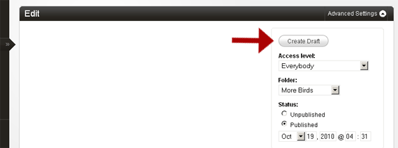
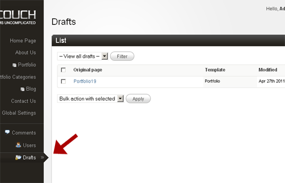
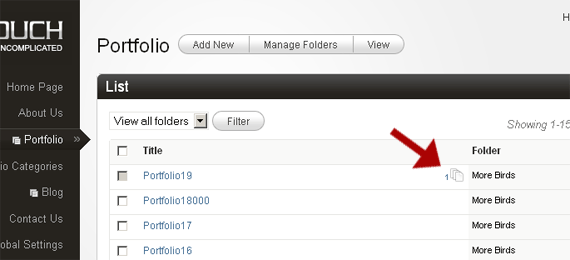
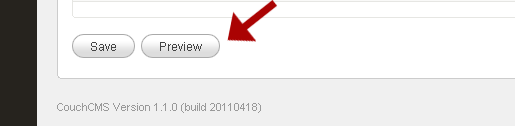
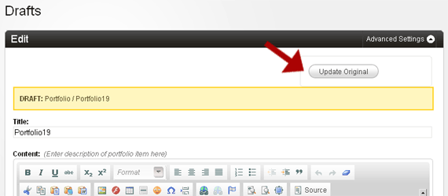

Drafts and Previews
Consider the following scenario -
A client wishes to make changes to some of his already published pages but does not want the changes to become immediately visible to the world. There could be several reasons for this -
A. He is likely to make several tentative changes to the pages before settling for the final versions and does not want to mess up the live pages in the process.
B. He wishes to show the revised pages to someone else before making the changes go live.
C. He wishes to make changes to a bunch of pages and then make the changes go online all at once sometime in the future.
Each of the situation listed above can now easily be handled by creating the draft versions of the pages and modifying the drafts instead of the original live pages.
A draft of any published page can be created by accessing the 'Advanced settings' of the page and then clicking the 'Create Draft' button that now shows up there.

A draft is actually a separate page in itself that has its data copied over from the original page.

All the drafts are stored in a separate new section called drafts that shows up only if there are any available drafts in the system.

The drafts are internally linked to their original pages and can also be accessed from the following link that shows up alongside the original pages that have any drafts available.

The user can safely work on a draft page without disturbing the original page at all. He can save the draft just as he would save any of the regular pages. He can also preview the changes he makes to the draft.

Once he is satisfied with his changes, he can either choose to update the original page (this will move the data from the draft into the original page and then delete the draft itself)

or discard the draft.
More than one draft may be created out of a single page. This comes in handy when the user wishes to create several different versions of the same page and then finally choose one of them to go live.